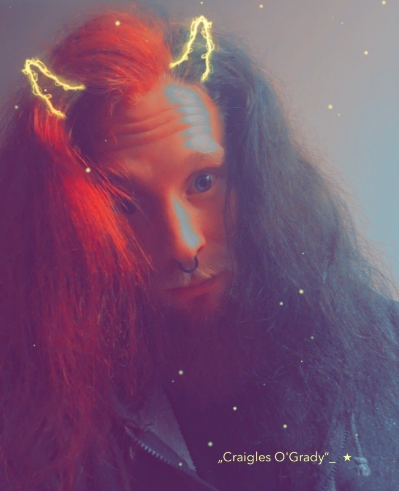
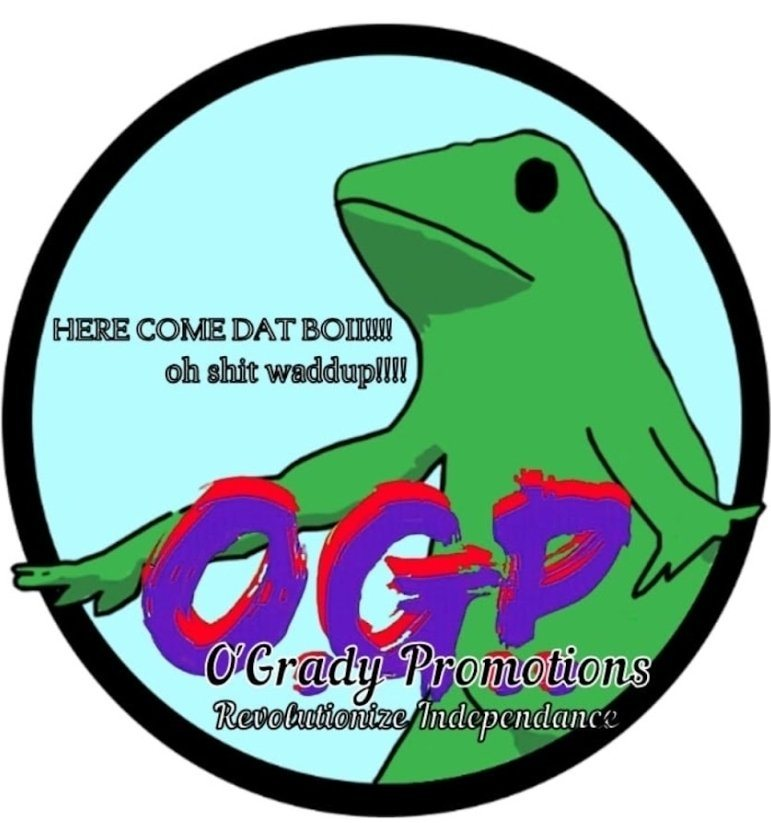

Craigles O’Grady

Craigles O’Grady represents the foundational era, spanning the turbulent years of 2017 to 2025. This was the defining chapter of “sad boii rap” — a potent, raw mix of emo rap featuring progressive flows and deeply introspective, thought-provoking messages. The music is a visceral roller coaster of passion, heartbreak, and the relentless drive to come out on top against all odds. Though the Craigles O’Grady persona had to be laid to rest for the next evolution of sound to take root, the music endures. This era is immortalized in projects like the Almost, But Not Quite greatest-hits album, alongside defining tracks like Bittersweet, Waited For The Exhale, and Take Me Over.

© O’Grady Promotions